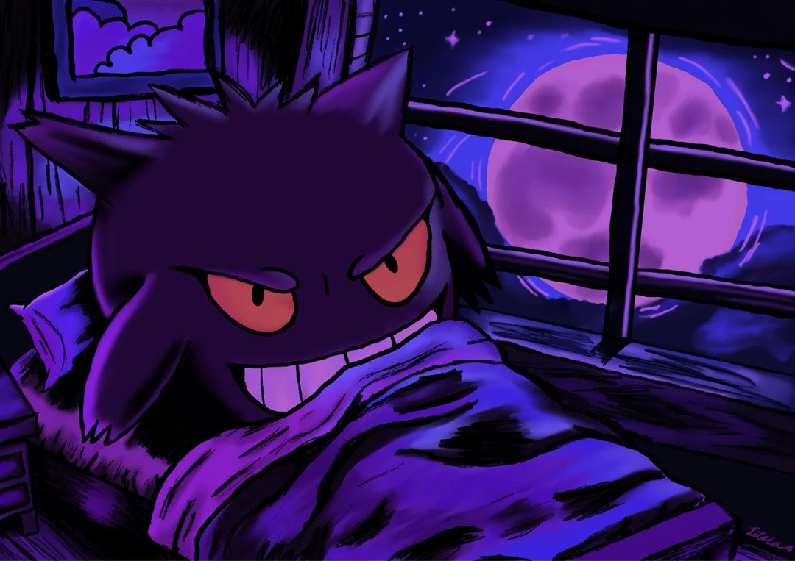

| Paulo Henrique Preciliano | 130 HP | |
|  | ||
|
Shadow Pokémon. Length: 178 cm, Weight: 76 kg. |
||
|
Pokémon Intoduction As often as you like during your turn (before your attack). you may turn all Energy attached to Charizard into Energy for the rest of the turn. This power can't be used if Charizard is Asleep, Confused, or Paralyzed. |
40 | |
|
Pokémon Intoduction As often as you like during your turn (before your attack). you may turn all Energy attached to Charizard into Energy for the rest of the turn. This power can't be used if Charizard is Asleep, Confused, or Paralyzed. |
40 |
By Paulo Preciliano © |